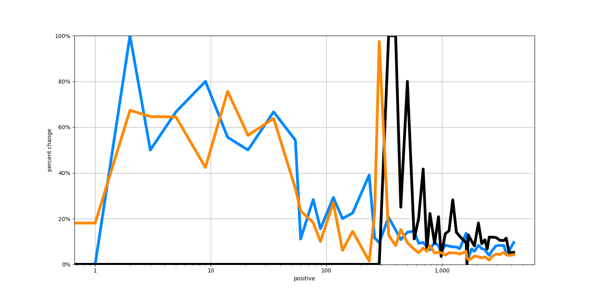

That is 243 more cases than yesterday, or a one-day increase of 8.3%. Yesterday there were 221 new cases, a one-day increase of 8.1%. The rate of new cases today is a little higher than yesterday.
The number of confirmed cases is recently growing at about 6.6% per day. That is doubling about every 10.9 days. At the current rate, the total number of confirmed cases will be about 5,000 in 7 days.
The following chart shows the rate-of-change over time of different statistics. The blue line shows the rate of change in the total confirmed infections. The orange line shows the rate of change in the total number of tests administered. The black line shows the rate of change in the total number of deaths.
